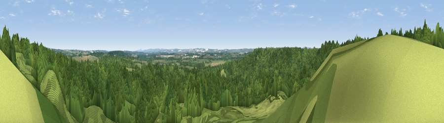

Viewpoint near Puddletown
#26123 in England · top 56% of its area beats it · near PuddletownWhere it is
The exact computed spot (SY 74075 92975). Click the marker for map links.
The view, rendered

A 360° render of this exact spot computed from the terrain model, tree cover and land cover — summer colours, afternoon light, calibrated against photographs of famous viewpoints. Real trees, hedges and buildings will differ in detail.
The panorama
Grey silhouette: terrain skyline in each direction (720 bearings, Earth curvature and refraction included). Dashed green: skyline with trees (+15 m) and buildings (+8 m) as obstacles. Blue strip: how far the ground is visible on each bearing.
Where the view opens
Wedge length = distance to the farthest visible ground on that bearing (vegetation-aware). Rings at 10, 25 and 50 km.
What fills the view
83% woodland · 11% grassland · 5% cropland
Angular shares of the visible panorama (visual magnitude), not map area. Landscape diversity 0.25 (0–1 Shannon).
Key numbers
More beautiful places nearby
The staircase of upgrades: each row has a higher view potential than everything closer. Driving times are estimates from straight-line distance, calibrated against real road routing — check an actual route before setting out.
| Place | Direction | Drive | Score |
|---|---|---|---|
| Viewpoint near West Stafford | SSW · 2 km | ~5 min | 45.6 |
| Viewpoint near Tincleton | E · 4 km | ~9 min | 46.5 |
| Viewpoint near Piddlehinton | NW · 5 km | ~10 min | 47.2 |
| Viewpoint near Tincleton | E · 5 km | ~11 min | 51.9 |
| Viewpoint near Godmanstone | NW · 8 km | ~16 min | 54.1 |
| Viewpoint near Sutton Poyntz | SSW · 9 km | ~17 min | 65.6 |
| East Hill | SSW · 9 km | ~18 min | 79.6 |
| Viewpoint near Sutton Poyntz | SSW · 10 km | ~19 min | 79.9 |
50.73580, -2.36873 · source: screening · position refined by local search. Computed location — check access rights before visiting.